Chapter 16
Introducing Swing
Key Skills & Concepts
 Know the origins and design philosophy of Swing
Know the origins and design philosophy of Swing Understand Swing components and containers
Know layout manager basics
Create, compile, and run a simple Swing application
Use JButton
Work with JTextField
Create a JCheckBox
Work with JList
Use anonymous inner classes or lambda expressions to handle events
Create a Swing applet
With the exception of the applet examples shown in Chapter 15, all of the programs in this book have been console-based. This means that they do not make use of a graphical user interface (GUI). Although console-based programs are excellent for teaching the basics of Java and for some types of programs, such as server-side code, most real-world applications will be GUI-based. At the time of this writing, the most widely used Java GUI is Swing.
Swing defines a collection of classes and interfaces that support a rich set of visual components, such as buttons, text fields, scroll panes, check boxes, trees, and tables, to name a few. Collectively, these controls can be used to construct powerful, yet easy-to-use graphical interfaces. Because of its widespread use, Swing is something with which all Java programmers should be familiar. Therefore, this chapter provides an introduction to this important GUI framework.
It is important to state at the outset that Swing is a very large topic that requires an entire book of its own. This chapter can only scratch its surface. However, the material presented here will give you a general understanding of Swing, including its history, basic concepts, and design philosophy. It then introduces five commonly used Swing components: the label, push button, text field, check box, and list. The chapter ends by showing how to create a Swing-based applet. Although this chapter describes only a small part of Swing’s features, after completing it, you will be able to begin writing simple GUI-based programs. You will also have a foundation upon which to continue your study of Swing.
Before moving on, it is necessary to mention that a new GUI framework called JavaFX has recently been created for Java. JavaFX provides a powerful, streamlined, flexible approach that simplifies the creation of visually exciting GUIs. As such, JavaFX has clearly been positioned as the platform of the future. Because of its importance, an introduction to JavaFX is provided in Chapter 17. Of course, Swing will continue to be in use for a long time, in part because of the large amount of legacy code that exists for it. Therefore, both Swing and JavaFX are likely to be part of any Java programmer’s job going forward.
NOTE
For a comprehensive introduction to Swing, see my book Swing: A Beginner’s Guide (McGraw-Hill Professional, 2007).
The Origins and Design Philosophy of Swing
Swing did not exist in the early days of Java. Rather, it was a response to deficiencies present in Java’s original GUI subsystem: the Abstract Window Toolkit (AWT). The AWT defines a basic set of components that support a usable, but limited, graphical interface. One reason for the limited nature of the AWT is that it translates its various visual components into their corresponding, platform-specific equivalents, or peers. This means that the look and feel of an AWT component is defined by the platform, not by Java. Because the AWT components use native code resources, they are referred to as heavyweight.
The use of native peers led to several problems. First, because of differences between operating systems, a component might look, or even act, differently on different platforms. This potential variability threatened the overarching philosophy of Java: write once, run anywhere. Second, the look and feel of each component was fixed (because it is defined by the platform) and could not be (easily) changed. Third, the use of heavyweight components caused some frustrating restrictions. For example, a heavyweight component was always opaque.
Not long after Java’s original release, it became apparent that the limitations and restrictions present in the AWT were sufficiently serious that a better approach was needed. The solution was Swing. Introduced in 1997, Swing was included as part of the Java Foundation Classes (JFC). Swing was initially available for use with Java 1.1 as a separate library. However, beginning with Java 1.2, Swing (and the rest of JFC) was fully integrated into Java.
Swing addresses the limitations associated with the AWT’s components through the use of two key features: lightweight components and a pluggable look and feel. Although they are largely transparent to the programmer, these two features are at the foundation of Swing’s design philosophy and the reason for much of its power and flexibility. Let’s look at each.
With very few exceptions, Swing components are lightweight. This means that a component is written entirely in Java. They do not rely on platform-specific peers. Lightweight components have some important advantages, including efficiency and flexibility. Furthermore, because lightweight components do not translate into platform-specific peers, the look and feel of each component is determined by Swing, not by the underlying operating system. This means that each component can work in a consistent manner across all platforms.
Because each Swing component is rendered by Java code rather than by platform-specific peers, it is possible to separate the look and feel of a component from the logic of the component, and this is what Swing does. Separating out the look and feel provides a significant advantage: it becomes possible to change the way that a component is rendered without affecting any of its other aspects. In other words, it is possible to “plug in” a new look and feel for any given component without creating any side effects in the code that uses that component.
Java provides look-and-feels, such as metal and Nimbus, that are available to all Swing users. The metal look and feel is also called the Java look and feel. It is a platform-independent look and feel that is available in all Java execution environments. It is also the default look and feel. For this reason, the default Java look and feel (metal) is used by the examples in this chapter.
Swing’s pluggable look and feel is made possible because Swing uses a modified version of the classic model-view-controller (MVC) architecture. In MVC terminology, the model corresponds to the state information associated with the component. For example, in the case of a check box, the model contains a field that indicates if the box is checked or unchecked. The view determines how the component is displayed on the screen, including any aspects of the view that are affected by the current state of the model. The controller determines how the component reacts to the user. For example, when the user clicks a check box, the controller reacts by changing the model to reflect the user’s choice (checked or unchecked). This then results in the view being updated. By separating a component into a model, a view, and a controller, the specific implementation of each can be changed without affecting the other two. For instance, different view implementations can render the same component in different ways without affecting the model or the controller.
Although the MVC architecture and the principles behind it are conceptually sound, the high level of separation between the view and the controller was not beneficial for Swing components. Instead, Swing uses a modified version of MVC that combines the view and the controller into a single logical entity called the UI delegate. For this reason, Swing’s approach is called either the model-delegate architecture or the separable model architecture. Therefore, although Swing’s component architecture is based on MVC, it does not use a classical implementation of it. Although you won’t work directly with models or UI delegates in this chapter, they are, nevertheless, present behind the scene.
As you work through this chapter, you will see that even though Swing embodies very sophisticated design concepts, it is easy to use. In fact, one could argue that Swing’s ease of use is its most important advantage. Simply stated, Swing makes manageable the often difficult task of developing your program’s user interface. This lets you concentrate on the GUI itself, rather than on implementation details.
Ask the Expert
Q: You say that Swing defines a GUI that is superior to the AWT. Does this mean that Swing replaces the AWT?
A: No, Swing does not replace the AWT. Rather, Swing builds upon the foundation provided by the AWT. Thus, the AWT is still a crucial part of Java. Swing also uses the same event handling mechanism as the AWT (which was described in Chapter 15). Although knowledge of the AWT is not required by this chapter, you need a solid understanding of its structure and features if you seek full Swing mastery.
Components and Containers
A Swing GUI consists of two key items: components and containers. However, this distinction is mostly conceptual because all containers are also components. The difference between the two is found in their intended purpose: As the term is commonly used, a component is an independent visual control, such as a push button or text field. A container holds a group of components. Thus, a container is a special type of component that is designed to hold other components. Furthermore, in order for a component to be displayed, it must be held within a container. Thus, all Swing GUIs will have at least one container. Because containers are components, a container can also hold other containers. This enables Swing to define what is called a containment hierarchy, at the top of which must be a top-level container.
Components
In general, Swing components are derived from the JComponent class. (The only exceptions to this are the four top-level containers, described in the next section.) JComponent provides the functionality that is common to all components. For example, JComponent supports the pluggable look and feel. JComponent inherits the AWT classes Container and Component. Thus, a Swing component is built on and compatible with an AWT component.
All of Swing’s components are represented by classes defined within the package javax.swing. The following table shows the class names for Swing components (including those used as containers):
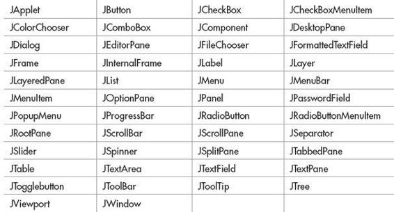
Notice that all component classes begin with the letter J. For example, the class for a label is JLabel, the class for a push button is JButton, and the class for a check box is JCheckBox. This chapter introduces five commonly used components: JLabel, JButton, JTextField, JCheckBox, and JList. Once you understand their basic operation, it will be easy for you to learn to use the others.
Containers
Swing defines two types of containers. The first are top-level containers: JFrame, JApplet, JWindow, and JDialog. These containers do not inherit JComponent. They do, however, inherit the AWT classes Component and Container. Unlike Swing’s other components, which are lightweight, the top-level containers are heavyweight. This makes the top-level containers a special case in the Swing component library.
As the name implies, a top-level container must be at the top of a containment hierarchy. A top-level container is not contained within any other container. Furthermore, every containment hierarchy must begin with a top-level container. The one most commonly used for applications is JFrame. The one used for applets is JApplet.
The second type of container supported by Swing is the lightweight container. Lightweight containers do inherit JComponent. Examples of lightweight containers are JPanel, JScrollPane, and JRootPane. Lightweight containers are often used to collectively organize and manage groups of related components because a lightweight container can be contained within another container. Thus, you can use lightweight containers to create subgroups of related controls that are contained within an outer container.
The Top-Level Container Panes
Each top-level container defines a set of panes. At the top of the hierarchy is an instance of JRootPane. JRootPane is a lightweight container whose purpose is to manage the other panes. It also helps manage the optional menu bar. The panes that compose the root pane are called the glass pane, the content pane, and the layered pane.
The glass pane is the top-level pane. It sits above and completely covers all other panes. The glass pane enables you to manage mouse events that affect the entire container (rather than an individual control) or to paint over any other component, for example. In most cases, you won’t need to use the glass pane directly. The layered pane allows components to be given a depth value. This value determines which component overlays another. (Thus, the layered pane lets you specify a Z-order for a component, although this is not something that you will usually need to do.) The layered pane holds the content pane and the (optional) menu bar. Although the glass pane and the layered panes are integral to the operation of a top-level container and serve important purposes, much of what they provide occurs behind the scene.
The pane with which your application will interact the most is the content pane, because this is the pane to which you will add visual components. In other words, when you add a component, such as a button, to a top-level container, you will add it to the content pane. Therefore, the content pane holds the components that the user interacts with.
Layout Managers
Before you begin writing a Swing program, there is one more thing that you need to be aware of: the layout manager. The layout manager controls the position of components within a container. Java offers several layout managers. Most are provided by the AWT (within java.awt), but Swing adds a few of its own. All layout managers are instances of a class that implements the LayoutManager interface. (Some will also implement the LayoutManager2 interface.) Here is a list of a few of the layout managers available to the Swing programmer:
| FlowLayout |
A simple layout that positions components left-to-right, top-to-bottom. (Positions components right-to-left for some cultural settings.) |
| BorderLayout |
Positions components within the center or the borders of the container. This is the default layout for a content pane. |
| GridLayout |
Lays out components within a grid. |
| GridBagLayout |
Lays out different size components within a flexible grid. |
| BoxLayout |
Lays out components vertically or horizontally within a box. |
| SpringLayout |
Lays out components subject to a set of constraints. |
Frankly, the topic of layout managers is quite large, and it is not possible to examine it in detail in this book. Fortunately, this chapter uses only two layout managers—BorderLayout and FlowLayout—and both are very easy to use.
BorderLayout is the default layout manager for the content pane. It implements a layout style that defines five locations to which a component can be added. The first is the center. The other four are the sides (i.e., borders), which are called north, south, east, and west. By default, when you add a component to the content pane, you are adding the component to the center. To add a component to one of the other regions, specify its name.
Although a border layout is useful in some situations, often another, more flexible layout manager is needed. One of the simplest is FlowLayout. A flow layout lays out components one row at a time, top to bottom. When one row is full, layout advances to the next row. Although this scheme gives you little control over the placement of components, it is quite simple to use. However, be aware that if you resize the frame, the position of the components will change.
A First Simple Swing Program
Swing programs differ from the console-based programs shown earlier in this book. They also differ from the AWT-based applets shown in Chapter 15. Not only do Swing programs use the Swing component set to handle user interaction, but they also have special requirements that relate to threading. The best way to understand the structure of a Swing program is to work through an example. There are two types of Java programs in which Swing is typically used. The first is a desktop application. The second is the applet. This section shows how to create a Swing application. The creation of a Swing applet is described later in this chapter.
Although quite short, the following program shows one way to write a Swing application. In the process it demonstrates several key features of Swing. It uses two Swing components: JFrame and JLabel. JFrame is the top-level container that is commonly used for Swing applications. JLabel is the Swing component that creates a label, which is a component that displays information. The label is Swing’s simplest component because it is passive. That is, a label does not respond to user input. It just displays output. The program uses a JFrame container to hold an instance of a JLabel. The label displays a short text message.
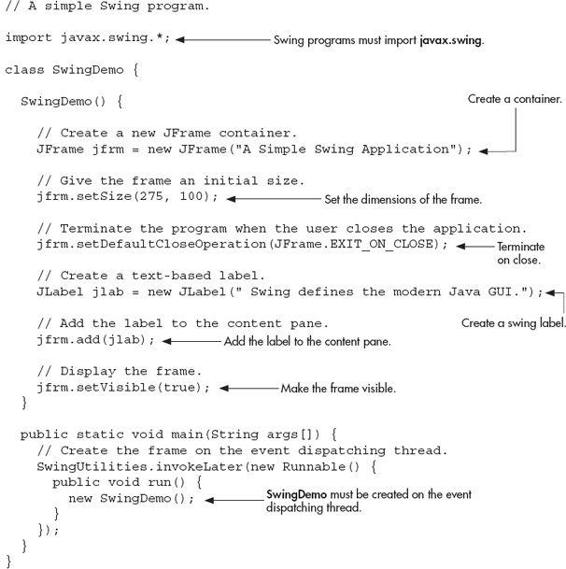
Swing programs are compiled and run in the same way as other Java applications. Thus, to compile this program, you can use this command line:
To run the program, use this command line:
When the program is run, it will produce the window shown in Figure 16-1.
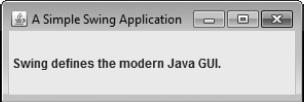
Figure 16-1 The window produced by the SwingDemo program
The First Swing Example Line by Line
Because the SwingDemo program illustrates several key Swing concepts, we will examine it carefully, line by line. The program begins by importing the following package:
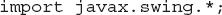
This javax.swing package contains the components and models defined by Swing. For example, it defines classes that implement labels, buttons, edit controls, and menus. This package will be included in all programs that use Swing.
Next, the program declares the SwingDemo class and a constructor for that class. The constructor is where most of the action of the program occurs. It begins by creating a JFrame, using this line of code:
This creates a container called jfrm that defines a rectangular window complete with a title bar; close, minimize, maximize, and restore buttons; and a system menu. Thus, it creates a standard, top-level window. The title of the window is passed to the constructor.
Next, the window is sized using this statement:
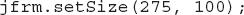
The setSize( ) method sets the dimensions of the window, which are specified in pixels. Its general form is shown here:
void setSize(int width, int height)
In this example, the width of the window is set to 275 and the height is set to 100.
By default, when a top-level window is closed (such as when the user clicks the close box), the window is removed from the screen, but the application is not terminated. While this default behavior is useful in some situations, it is not what is needed for most applications. Instead, you will usually want the entire application to terminate when its top-level window is closed. There are a couple of ways to achieve this. The easiest way is to call setDefaultCloseOperation( ), as the program does:
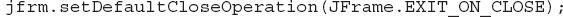
After this call executes, closing the window causes the entire application to terminate. The general form of setDefaultCloseOperation( ) is shown here:
void setDefaultCloseOperation(int what)
The value passed in what determines what happens when the window is closed. There are several other options in addition to JFrame.EXIT_ON_CLOSE. They are shown here:
JFrame.DISPOSE_ON_CLOSE
JFrame.HIDE_ON_CLOSE
JFrame.DO_NOTHING_ON_CLOSE
Their names reflect their actions. These constants are declared in WindowConstants, which is an interface declared in javax.swing that is implemented by JFrame.
The next line of code creates a JLabel component:
JLabel is the easiest-to-use Swing component because it does not accept user input. It simply displays information, which can consist of text, an icon, or a combination of the two. The label created by the program contains only text, which is passed to its constructor.
The next line of code adds the label to the content pane of the frame:
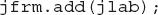
As explained earlier, all top-level containers have a content pane in which components are stored. Thus, to add a component to a frame, you must add it to the frame’s content pane. This is accomplished by calling add( ) on the JFrame reference (jfrm in this case). The add( ) method has several versions. The general form of the one used by the program is shown here:
Component add(Component comp)
By default, the content pane associated with a JFrame uses a border layout. This version of add( ) adds the component (in this case, a label) to the center location. Other versions of add( ) enable you to specify one of the border regions. When a component is added to the center, its size is automatically adjusted to fit the size of the center.
The last statement in the SwingDemo constructor causes the window to become visible.
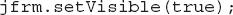
Ask the Expert
Q: I have seen Swing programs that use a method called getContentPane( ) when adding a component to the content pane. What is this method and do I need to use it?
A: This question brings up an important historical point. Prior to JDK 5, when adding a component to the content pane, you could not invoke the add( ) method directly on a JFrame instance. Instead, you needed to explicitly call add( ) on the content pane of the JFrame object. The content pane can be obtained by calling getContentPane( ) on a JFrame instance. The getContentPane( ) method is shown here:
Container getContentPane( )
It returns a Container reference to the content pane. The add( ) method was then called on that reference to add a component to a content pane. Thus, in the past, you had to use the following statement to add jlab to jfrm:
Here, getContentPane( ) first obtains a reference to the content pane, and then add( ) adds the component to the container linked to this pane. This same procedure was also required to invoke remove( ) to remove a component and setLayout( ) to set the layout manager for the content pane. You will see explicit calls to getContentPane( ) frequently throughout pre-5.0 code. Today, the use of getContentPane( ) is no longer necessary. You can simply call add( ), remove( ), and setLayout( ) directly on JFrame because these methods have been changed so that they automatically operate on the content pane.
The setVisible( ) method has this general form:
void setVisible(boolean flag)
If flag is true, the window will be displayed. Otherwise, it will be hidden. By default, a JFrame is invisible, so setVisible(true) must be called to show it.
Inside main( ), a SwingDemo object is created, which causes the window and the label to be displayed. Notice that the SwingDemo constructor is invoked using these lines of code:
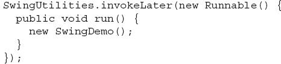
This sequence causes a SwingDemo object to be created on the event-dispatching thread rather than on the main thread of the application. Here’s why. In general, Swing programs are event-driven. For example, when a user interacts with a component, an event is generated. An event is passed to the application by calling an event handler defined by the application. However, the handler is executed on the event-dispatching thread provided by Swing and not on the main thread of the application. Thus, although event handlers are defined by your program, they are called on a thread that was not created by your program. To avoid problems (such as two different threads trying to update the same component at the same time), all Swing GUI components must be created and updated from the event-dispatching thread, not the main thread of the application. However, main( ) is executed on the main thread. Thus, it cannot directly instantiate a SwingDemo object. Instead, it must create a Runnable object that executes on the event-dispatching thread, and have this object create the GUI.
To enable the GUI code to be created on the event-dispatching thread, you must use one of two methods that are defined by the SwingUtilities class. These methods are invokeLater( ) and invokeAndWait( ). They are shown here:
static void invokeLater(Runnable obj)
static void invokeAndWait(Runnable obj)
throws InterruptedException, InvocationTargetException
Ask the Expert
Q: You state that it is possible to add a component to the other regions of a border layout by using an overloaded version of add( ). Can you explain?
A: As explained, BorderLayout implements a layout style that defines five locations to which a component can be added. The first is the center. The other four are the sides (i.e., borders), which are called north, south, east, and west. By default, when you add a component to the content pane, you are adding the component to the center. To specify one of the other locations, use this form of add( ):
void add(Component comp, Object loc)
Here, comp is the component to add and loc specifies the location to which it is added. The loc value is typically one of the following:
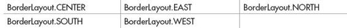
In general, BorderLayout is most useful when you are creating a JFrame that contains a centered component (which might be a group of components held within one of Swing’s lightweight containers) that has a header and/or footer component associated with it. In other situations, one of Java’s other layout managers will be more appropriate.

Here, obj is a Runnable object that will have its run( ) method called by the event-dispatching thread. The difference between the two methods is that invokeLater( ) returns immediately, but invokeAndWait( ) waits until obj.run( ) returns. You can use these methods to call a method that constructs the GUI for your Swing application, or whenever you need to modify the state of the GUI from code not executed by the event-dispatching thread. You will normally want to use invokeLater( ), as the preceding program does. However, when constructing the initial GUI for an applet, you will want to use invokeAndWait( ). (Creating Swing applets is described later in this chapter.)
One more point: The preceding program does not respond to any events, because JLabel is a passive component. In other words, a JLabel does not generate any events. Therefore, the preceding program does not include any event handlers. However, all other components generate events to which your program must respond, as the subsequent examples in this chapter show.
Use JButton
One of the most commonly used Swing controls is the push button. A push button is an instance of JButton. JButton inherits the abstract class AbstractButton, which defines the functionality common to all buttons. Swing push buttons can contain text, an image, or both, but this book uses only text-based buttons.
JButton supplies several constructors. The one used here is
JButton(String msg)
Here, msg specifies the string that will be displayed inside the button.
When a push button is pressed, it generates an ActionEvent. ActionEvent is defined by the AWT and also used by Swing. JButton provides the following methods, which are used to add or remove an action listener:
void addActionListener(ActionListener al)
void removeActionListener(ActionListener al)
Here, al specifies an object that will receive event notifications. This object must be an instance of a class that implements the ActionListener interface.
The ActionListener interface defines only one method: actionPerformed( ). It is shown here:
void actionPerformed(ActionEvent ae)
This method is called when a button is pressed. In other words, it is the event handler that is called when a button press event has occurred. Your implementation of actionPerformed( ) must quickly respond to that event and return. As a general rule, event handlers must not engage in long operations, because doing so will slow down the entire application. If a time-consuming procedure must be performed, then a separate thread should be created for that purpose.
Using the ActionEvent object passed to actionPerformed( ), you can obtain several useful pieces of information relating to the button-press event. The one used by this chapter is the action command string associated with the button. By default, this is the string displayed inside the button. The action command is obtained by calling getActionCommand( ) on the event object. It is declared like this:
String getActionCommand( )
The action command identifies the button. Thus, when using two or more buttons within the same application, the action command gives you an easy way to determine which button was pressed.
The following program demonstrates how to create a push button and respond to button-press events. Figure 16-2 shows how the example appears on the screen.
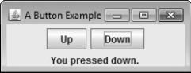
Figure 16-2 Output from the ButtonDemo program
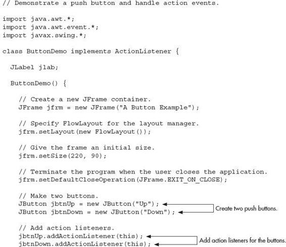
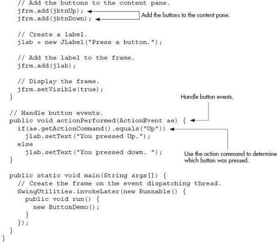
Let’s take a close look at the new things in this program. First, notice that the program now imports both the java.awt and java.awt.event packages. The java.awt package is needed because it contains the FlowLayout class, which supports the flow layout manager. The java.awt.event package is needed because it defines the ActionListener interface and the ActionEvent class.
Next, the class ButtonDemo is declared. Notice that it implements ActionListener. This means that ButtonDemo objects can be used to receive action events. Next, a JLabel reference is declared. This reference will be used within the actionPerformed( ) method to display which button has been pressed.
The ButtonDemo constructor begins by creating a JFrame called jfrm. It then sets the layout manager for the content pane of jfrm to FlowLayout, as shown here:
As explained earlier, by default, the content pane uses BorderLayout as its layout manager, but for many applications, FlowLayout is more convenient. Recall that a flow layout lays out components one row at a time, top to bottom. When one row is full, layout advances to the next row. Although this scheme gives you little control over the placement of components, it is quite simple to use. However, be aware that if you resize the frame, the position of the components will change.
After setting the size and the default close operation, ButtonDemo( ) creates two buttons, as shown here:
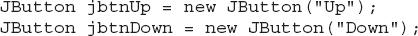
The first button will contain the text "Up", and the second will contain "Down".
Next, the instance of ButtonDemo referred to via this is added as an action listener for the buttons by these two lines:
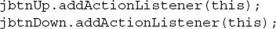
This approach means that the object that creates the buttons will also receive notifications when a button is pressed.
Each time a button is pressed, it generates an action event and all registered listeners are notified by calling the actionPerformed( ) method. The ActionEvent object representing the button event is passed as a parameter. In the case of ButtonDemo, this event is passed to this implementation of actionPerformed( ):
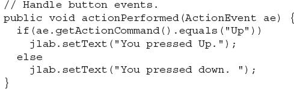
The event that occurred is passed via ae. Inside the method, the action command associated with the button that generated the event is obtained by calling getActionCommand( ). (Recall that, by default, the action command is the same as the text displayed by the button.) Based on the contents of that string, the text in the label is set to show which button was pressed.
One last point: Remember that actionPerformed( ) is called on the event-dispatching thread as explained earlier. It must return quickly in order to avoid slowing down the application.
Work with JTextField
Another commonly used control is JTextField. It enables the user to enter a line of text. JTextField inherits the abstract class JTextComponent, which is the superclass of all text components. JTextField defines several constructors. The one we will use is shown here:
JTextField(int cols)
Here, cols specifies the width of the text field in columns. It is important to understand that you can enter a string that is longer than the number of columns. It’s just that the physical size of the text field on the screen will be cols columns wide.
When you press ENTER when inputting into a text field, an ActionEvent is generated. Therefore, JTextField provides the addActionListener( ) and removeActionListener( ) methods. To handle action events, you must implement the actionPerformed( ) method defined by the ActionListener interface. The process is similar to handling action events generated by a button, as described earlier.
Like a JButton, a JTextField has an action command string associated with it. By default, the action command is the current content of the text field. However, this default is seldom used. Instead, you will usually set the action command to a fixed value of your own choosing by calling the setActionCommand( ) method, shown here:
void setActionCommand(String cmd)
The string passed in cmd becomes the new action command. The text in the text field is unaffected. Once you set the action command string, it remains the same no matter what is entered into the text field. One reason that you might want to explicitly set the action command is to provide a way to recognize the text field as the source of an action event. This is especially important when another control in the same frame also generates action events and you want to use the same event handler to process both events. Setting the action command gives you a way to tell them apart. Also, if you don’t set the action command associated with a text field, then by happenstance the contents of the text field might match the action command of another component.
Ask the Expert
Q: You explained that the action command associated with a text field can be set by calling setActionCommand( ). Can I use this method to set the action command associated with a push button?
A: Yes. As explained, by default the action command associated with a push button is the name of the button. To set the action command to a different value, you can use the setActionCommand( ) method. It works the same for JButton as it does for JTextField.
To obtain the string that is currently displayed in the text field, call getText( ) on the JTextField instance. It is declared as shown here:
String getText( )
You can set the text in a JTextField by calling setText( ), shown next:
void setText(String text)
Here, text is the string that will be put into the text field.
The following program demonstrates JTextField. It contains one text field, one push button, and two labels. One label prompts the user to enter text into the text field. When the user presses ENTER while focus is within the text field, the contents of the text field are obtained and displayed within a second label. The push button is called Reverse. When pressed, it reverses the contents of the text field. Sample output is shown in Figure 16-3.
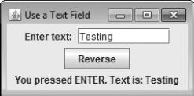
Figure 16-3 Sample output from the TFDemo program
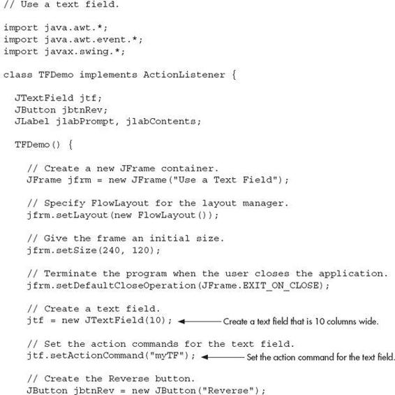
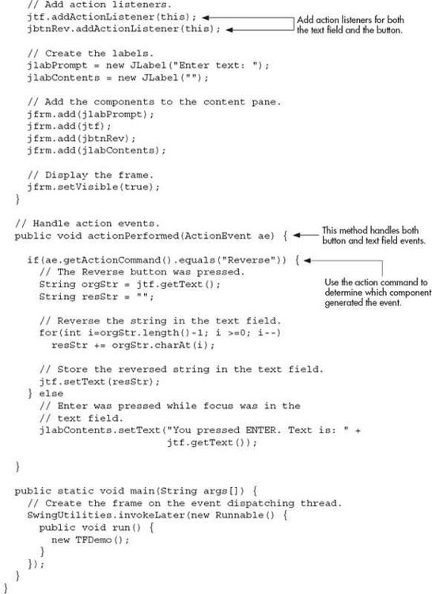
Much of the program will be familiar, but a few parts warrant special attention. First, notice that the action command associated with the text field is set to "myTF" by the following line:
After this line executes, the action command string will always be "myTF" no matter what text is currently held in the text field. Therefore, the action command generated by jtf will not accidentally conflict with the action command associated with the Reverse push button. The actionPerformed( ) method makes use of this fact to determine what event has occurred. If the action command string is "Reverse", it can mean only one thing: that the Reverse push button has been pressed. Otherwise, the action command was generated by the user pressing ENTER while the text field had input focus.
Finally, notice this line from within the actionPerformed( ) method:
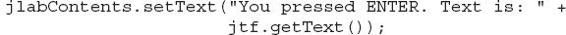
As explained, when the user presses ENTER while focus is inside the text field, an ActionEvent is generated and sent to all registered action listeners, through the actionPerformed( ) method. For TFDemo, this method simply obtains the text currently held in the text field by calling getText( ) on jtf. It then displays the text through the label referred to by jlabContents.
Create a JCheckBox
After the push button, perhaps the next most widely used control is the check box. In Swing, a check box is an object of type JCheckBox. JCheckBox inherits AbstractButton and JToggleButton. Thus, a check box is, essentially, a special type of button.
JCheckBox defines several constructors. The one used here is
JCheckBox(String str)
It creates a check box that has the text specified by str as a label.
When a check box is selected or deselected (that is, checked or unchecked), an item event is generated. Item events are represented by the ItemEvent class. Item events are handled by classes that implement the ItemListener interface. This interface specifies only one method: itemStateChanged( ), which is shown here:
void itemStateChanged(ItemEvent ie)
The item event is received in ie.
To obtain a reference to the item that changed, call getItem( ) on the ItemEvent object. This method is shown here:
Object getItem( )
The reference returned must be cast to the component class being handled, which in this case is JCheckBox.
You can obtain the text associated with a check box by calling getText( ). You can set the text after a check box is created by calling setText( ). These methods work the same as they do for JButton, described earlier.
The easiest way to determine the state of a check box is to call the isSelected( ) method. It is shown here:
boolean isSelected( )
It returns true if the check box is selected and false otherwise.
The following program demonstrates check boxes. It creates three check boxes called Alpha, Beta, and Gamma. Each time the state of a box is changed, the current action is displayed. Also, the list of all currently selected check boxes is displayed. Sample output is shown in Figure 16-4.
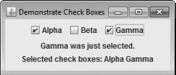
Figure 16-4 Sample output from the CBDemo program
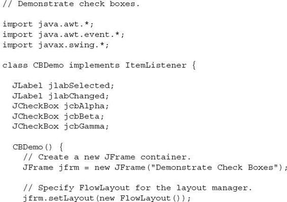
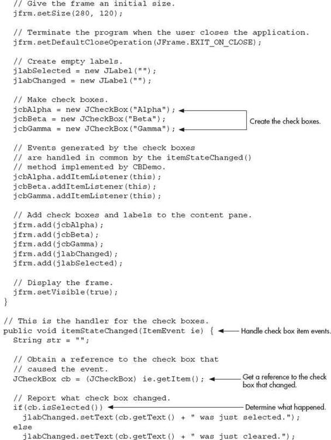
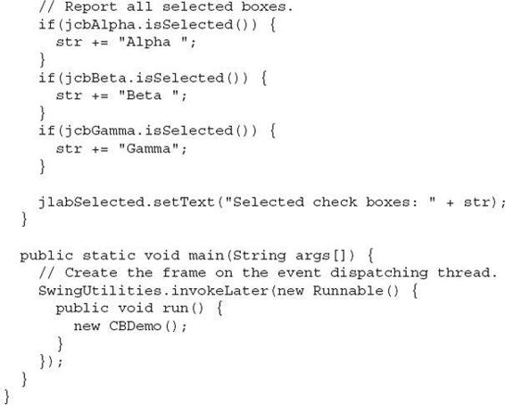
The main point of interest in this program is the item event handler, itemStateChanged( ). It performs two functions. First, it reports whether the check box has been selected or cleared. Second, it displays all selected check boxes. It begins by obtaining a reference to the check box that generated the ItemEvent, as shown here:
The cast to JCheckBox is necessary because getItem( ) returns a reference of type Object. Next, itemStateChanged( ) calls isSelected( ) on cb to determine the current state of the check box. If isSelected( ) returns true, it means that the user selected the check box. Otherwise, the check box was cleared. It then sets the jlabChanged label to reflect what happened.
Finally, itemStateChanged( ) checks the selected state of each check box, building a string that contains the names of those that are selected. It displays this string in the jlabSelected label.
Work with JList
The last component that we will examine is JList. This is Swing’s basic list class. It supports the selection of one or more items from a list. Although often the list consists of strings, it is possible to create a list of just about any object that can be displayed. JList is so widely used in Java that it is highly unlikely that you have not seen one before.
In the past, the items in a JList were represented as Object references. However, beginning with JDK 7, JList was made generic, and it is now declared like this:
class JList<E>
Here, E represents the type of the items in the list. As a result, JList is now type-safe.
JList provides several constructors. The one used here is
JList(E[ ] items)
This creates a JList that contains the items in the array specified by items.
Although a JList will work properly by itself, most of the time you will wrap a JList inside a JScrollPane, which is a container that automatically provides scrolling for its contents. Here is the constructor that we will use:
JScrollPane(Component comp)
Here, comp specifies the component to be scrolled, which in this case will be a JList. When you wrap a JList in a JScrollPane, long lists will automatically be scrollable. This simplifies GUI design. It also makes it easy to change the number of entries in a list without having to change the size of the JList component.
A JList generates a ListSelectionEvent when the user makes or changes a selection. This event is also generated when the user deselects an item. It is handled by implementing ListSelectionListener, which is packaged in javax.swing.event. This listener specifies only one method, called valueChanged( ), which is shown here:
void valueChanged(ListSelectionEvent le)
Here, le is a reference to the object that generated the event. Although ListSelectionEvent does provide some methods of its own, often you will interrogate the JList object itself to determine what has occurred. ListSelectionEvent is also packaged in javax.swing.event.
By default, a JList allows the user to select multiple ranges of items within the list, but you can change this behavior by calling setSelectionMode( ), which is defined by JList. It is shown here:
void setSelectionMode(int mode)
Here, mode specifies the selection mode. It must be one of these values defined by the ListSelectionModel interface (which is packaged in javax.swing):
SINGLE_SELECTION
SINGLE_INTERVAL_SELECTION
MULTIPLE_INTERVAL_SELECTION
The default, multiple-interval selection lets the user select multiple ranges of items within a list. With single-interval selection, the user can select one range of items. With single selection, the user can select only a single item. Of course, a single item can be selected in the other two modes, too. It’s just that they also allow a range to be selected.
You can obtain the index of the first item selected, which will also be the index of the only selected item when using single-selection mode, by calling getSelectedIndex( ), shown here:
int getSelectedIndex( )
Indexing begins at zero. So, if the first item is selected, this method will return 0. If no item is selected, –1 is returned.
You can obtain an array containing all selected items by calling getSelectedIndices( ), shown next:
int[ ] getSelectedIndices( )
In the returned array, the indices are ordered from smallest to largest. If a zero-length array is returned, it means that no items are selected.
The following program demonstrates a simple JList, which holds a list of names. Each time a name is selected in the list, a ListSelectionEvent is generated, which is handled by the valueChanged( ) method defined by ListSelectionListener. It responds by obtaining the index of the selected item and displaying the corresponding name. Sample output is shown in Figure 16-5.
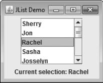
Figure 16-5 Output from the ListDemo program
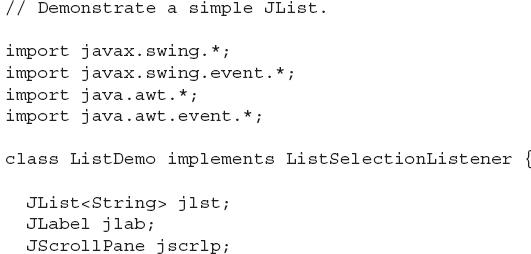
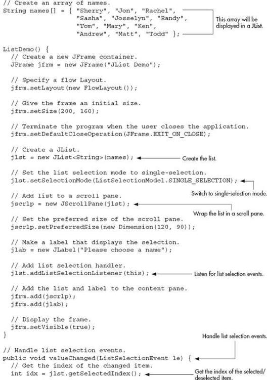
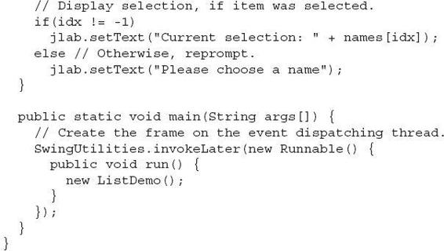
Let’s look closely at this program. First, notice the names array near the top of the program. It is initialized to a list of strings that contain various names. Inside ListDemo( ), a JList called jlst is constructed using the names array. As mentioned, when the array constructor is used (as it is in this case), a JList instance is automatically created that contains the contents of the array. Thus, the list will contain the names in names.
Next, the selection mode is set to single selection. This means that only one item in this list can be selected at any one time. Then, jlst is wrapped inside a JScrollPane, and the preferred size of the scroll pane is set to 120 by 90. This makes for a compact, but easy-to-use scroll pane. In Swing, the setPreferredSize( ) method sets the ideal size of a component. Be aware that some layout managers are free to ignore this request, but most often the preferred size determines the size of the component.
A list selection event occurs whenever the user selects an item or changes the item selected. Inside the valueChanged( ) event handler, the index of the item selected is obtained by calling getSelectedIndex( ). Because the list has been set to single-selection mode, this is also the index of the only item selected. This index is then used to index the names array to obtain the selected name. Notice that this index value is tested against –1. Recall that this is the value returned if no item has been selected. This will be the case when the selection event handler is called if the user has deselected an item. Remember: A selection event is generated when the user selects or deselects an item.
| Try This 16-1 |
A Swing-Based File Comparison Utility |
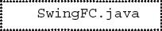
Although you know only a small amount about Swing, you can still put it to use to create a practical application. In Try This 10-1, you created a console-based file comparison utility. This project creates a Swing-based version of the program. As you will see, giving this application a Swing-based user interface substantially improves its appearance and makes it easier to use. Here is how the Swing version looks:
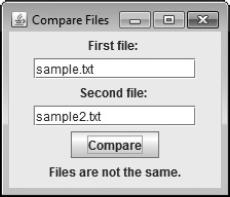
Because Swing streamlines the creation of GUI-based programs, you might be surprised by how easy it is to create this program.
1. Begin by creating a file called SwingFC.java and then enter the following comment and import statements:
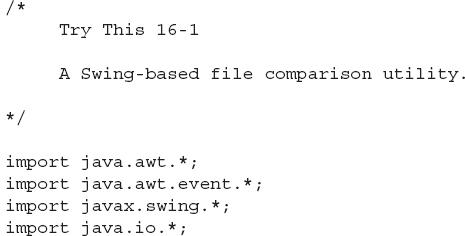
2. Next, begin the SwingFC class, as shown here:
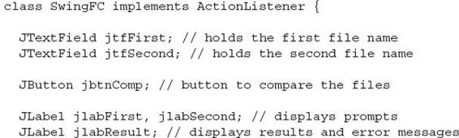
The names of the files to compare are entered into the text fields defined by jtfFirst and jtfSecond. To compare the files, the user presses the jbtnComp button. Prompting messages are displayed in jlabFirst and jlabSecond. The results of the comparison, or any error messages, are displayed in jlabResult.
3. Code the SwingFC constructor like this:
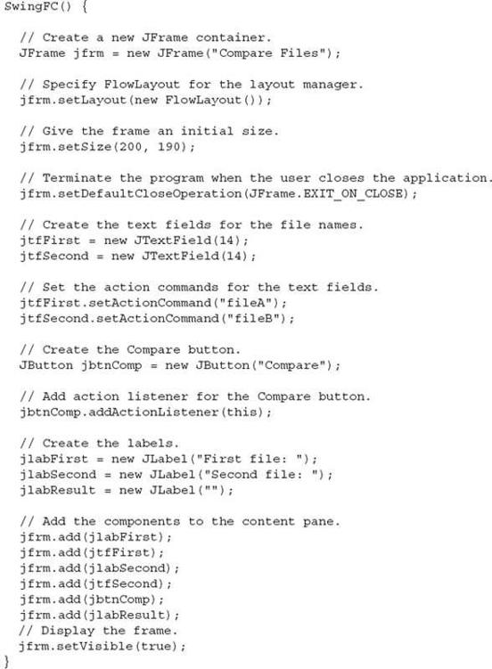
Most of the code in this constructor should be familiar to you. However, notice one thing: an action listener is added only to the push button jbtnCompare. Action listeners are not added to the text fields. Here’s why: the contents of the text fields are needed only when the Compare button is pushed. At no other time are their contents required. Thus, there is no reason to respond to any text field events. As you begin to write more Swing programs, you will find that this is often the case when using a text field.
4. Begin creating the actionPerformed( ) event handler, as shown next. This method is called when the Compare button is pressed.
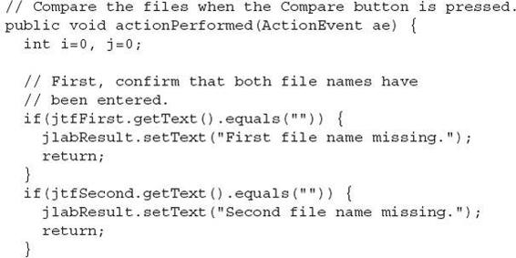
The method begins by confirming that the user has entered a file name into each of the text fields. If this is not the case, the missing file name is reported and the handler returns.
5. Now, finish actionPerformed( ) by adding the code that actually opens the files and then compares them.
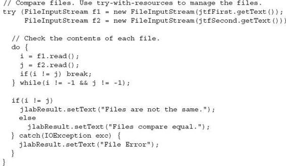
6. Finish SwingFC by adding the following main( ) method.
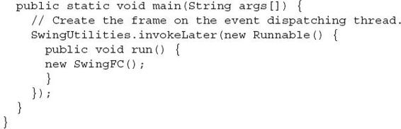
7. The entire Swing-based file comparison program is shown here:
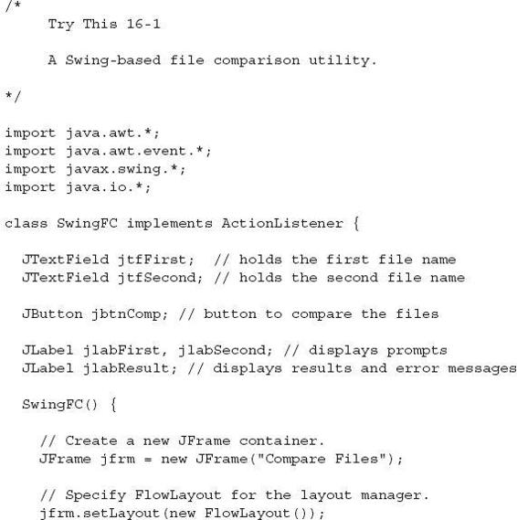
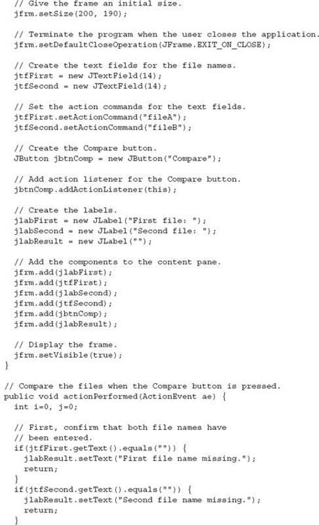
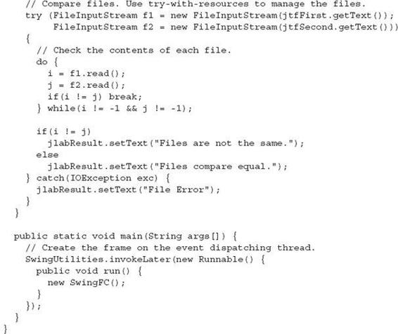
Use Anonymous Inner Classes or Lambda Expressions to Handle Events
Up to this point, the programs in this chapter have used a simple, straightforward approach to handling events in which the main class of the application has implemented the listener interface itself and all events are sent to an instance of that class. While this is perfectly acceptable, it is not the only way to handle events. For example, you could use separate listener classes. Thus, different classes could handle different events and these classes would be separate from the main class of the application. However, two other approaches offer powerful alternatives. First, you can implement listeners through the use of anonymous inner classes. Second, in some cases, you can use a lambda expression to handle an event. Let’s look at each approach.
Anonymous inner classes are inner classes that don’t have a name. Instead, an instance of the class is simply generated “on the fly” as needed. Anonymous inner classes make implementing some types of event handlers much easier. For example, given a JButton called jbtn, you could implement an action listener for it like this:
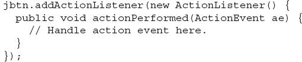
Here, an anonymous inner class is created that implements the ActionListener interface. Pay special attention to the syntax. The body of the inner class begins after the { that follows new ActionListener( ). Also notice that the call to addActionListener( ) ends with a ) and a ; just like normal. The same basic syntax and approach is used to create an anonymous inner class for any event handler. Of course, for different events, you specify different event listeners and implement different methods.
One advantage to using an anonymous inner class is that the component that invokes the class’ methods is already known. For instance, in the preceding example, there is no need to call getActionCommand( ) to determine what component generated the event, because this implementation of actionPerformed( ) will only be called by events generated by jbtn. You will see anonymous inner classes at work in the Swing applet shown in the following section.
In the case of an event whose listener defines a functional interface, you can handle the event by use of a lambda expression. For example, action events can be handled with a lambda expression because ActionListener defines only one abstract method, actionPerformed( ). Using a lambda expression to implement ActionListener provides a compact alternative to explicitly declaring an anonymous inner class. For example, again assuming a JButton called jbtn, you could implement the action listener like this:
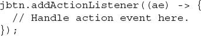
As was the case with the anonymous inner class approach, the object that generates the event is known. In this case, the lambda expression applies only to the jbtn button.
Of course, in cases in which an event can be handled by use of a single expression, it is not necessary to use a block lambda. For example, here is an action event handler for the Up button in the ButtonDemo program shown earlier. It requires only an expression lambda.
Notice how much shorter this code is compared with the original approach. It is also shorter than it would be if you explicitly used an anonymous inner class.
In general, you can use a lambda expression to handle an event when its listener defines a functional interface. For example, ItemListener is also a functional interface. Of course, whether you use the traditional approach, an anonymous inner class, or a lambda expression will be determined by the precise nature of your application. To gain experience with each, try converting the event handlers in the foregoing examples to lambda expressions or anonymous inner classes.
Create a Swing Applet
The preceding example programs have been Swing-based applications. The second type of program that commonly uses Swing is the applet. Swing-based applets are similar to AWT-based applets described in Chapter 15, but with an important difference: A Swing applet extends JApplet rather than Applet. JApplet is derived from Applet. Thus, JApplet includes all of the functionality found in Applet and adds support for Swing. JApplet is a top-level Swing container. Therefore, it includes the various panes described earlier. As a result, all components are added to JApplet’s content pane in the same way that components are added to JFrame’s content pane.
Swing applets use the same four life-cycle methods described in Chapter 15: init( ), start( ), stop( ), and destroy( ). Of course, you need to override only those methods that are needed by your applet. In general, painting is accomplished differently in Swing than it is in the AWT. Thus, a Swing applet will not usually override the paint( ) method.
One other point: All interaction with components in a Swing applet must take place on the event-dispatching thread, as described in the preceding section. This threading issue applies to all Swing programs.
Here is an example of a Swing applet. It provides the same functionality as the push-button example shown earlier in this chapter, but it does so in applet form. It also uses anonymous inner classes to implement the action event handlers. Figure 16-6 shows the program when executed by appletviewer.
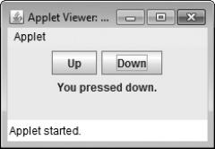
Figure 16-6 Output from the example Swing applet
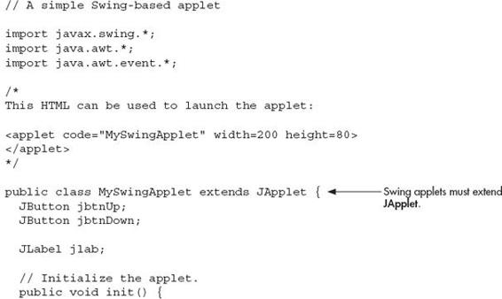
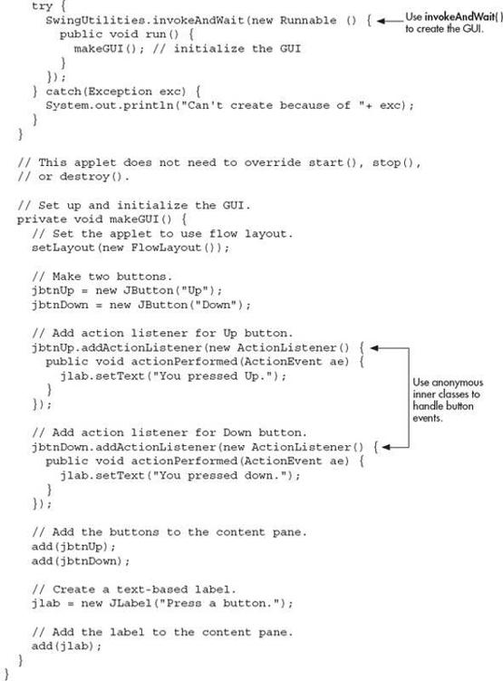
There are several important things to notice about this applet. First, MySwingApplet extends JApplet. As explained, all Swing-based applets extend JApplet rather than Applet. Second, the init( ) method initializes the Swing components on the event-dispatching thread by setting up a call to makeGUI( ). Notice that this is accomplished through the use of invokeAndWait( ) rather than invokeLater( ). Applets must use invokeAndWait( ) because the init( ) method must not return until the entire initialization process has been completed. In essence, the start( ) method cannot be called until after initialization, which means that the GUI must be fully constructed.
Inside makeGUI( ), the two buttons and label are created, and the action listeners are added to the buttons. Notice that anonymous inner classes are used to implement the action event handlers. You can use these as a model for implementing other event handlers. One of the primary advantages is that the object that causes the event is known because it is the object on which the anonymous inner class is instantiated. Therefore, it is not necessary to obtain the action command to determine which button generated the event. (Using a lambda expression would also provide the same advantage.) Finally, the components are added to the content pane. Although this example is quite simple, this same general approach can be used when building any Swing GUI that will be used by an applet.
 Chapter 16 Self Test
Chapter 16 Self Test
1. In general, AWT components are heavyweight and Swing components are ____________.
2. Can the look and feel of a Swing component be changed? If so, what feature enables this?
3. What is the most commonly used top-level container for an application?
4. Top-level containers have several panes. To what pane are components added?
5. Show how to construct a label that contains the message "Select an entry from the list".
6. All interaction with GUI components must take place on what thread?
7. What is the default action command associated with a JButton? How can the action command be changed?
8. What event is generated when a push button is pressed?
9. Show how to create a text field that has 32 columns.
10. Can a JTextField have its action command set? If so, how?
11. What Swing component creates a check box? What event is generated when a check box is selected or deselected?
12. JList displays a list of items from which the user can select. True or False?
13. What event is generated when the user selects or deselects an item in a JList?
14. What method sets the selection mode of a JList? What method obtains the index of the first selected item?
15. To create a Swing-based applet, what class must you inherit?
16. Usually, Swing-based applets use invokeAndWait( ) to create the initial GUI. True or False?
17. Add a check box to the file comparer developed in Try This 15-1 that has the following text: Show position of mismatch. When this box is checked, have the program display the location of the first point in the files at which a mismatch occurs.
18. Change the ListDemo program so that it allows multiple items in the list to be selected.
19. Bonus challenge: Convert the Help class developed in Try This 4-1 into a Swing-based GUI program. Display the keywords (for, while, switch, and so on) in a JList. When the user selects one, display the keyword’s syntax. To display multiple lines of text within a label, you can use HTML. When doing so, you must begin the text with the sequence <html>. When this is done, the text is automatically formatted as described by the markup. In addition to other benefits, using HTML enables you to create labels that span two or more lines. For example, this creates a label that displays two lines of text, with the string "Top" over the string "Bottom".
No answer is shown for this exercise. You have reached the point where you are ready to apply your Java skills on your own!